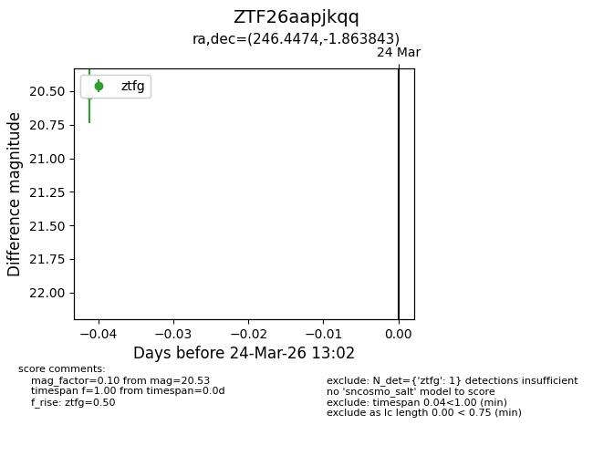
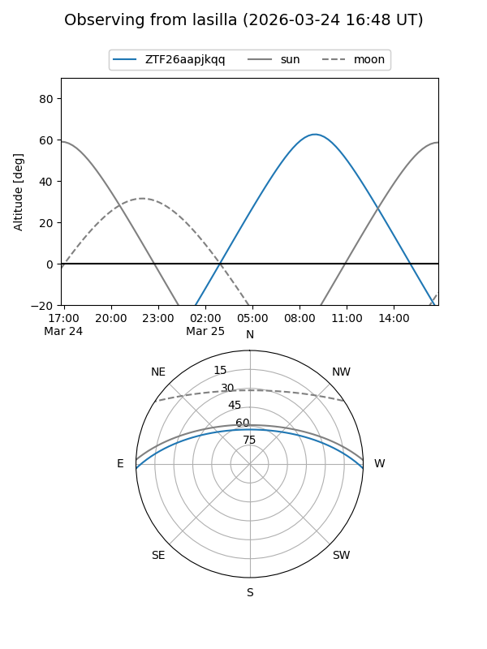
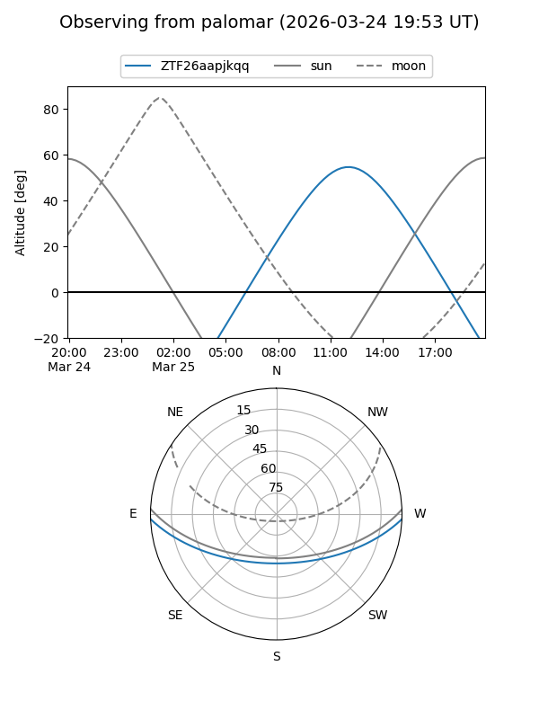

ZTF26aapjkqq
Target ZTF26aapjkqq at 2026-03-24 13:05
Aliases and brokers:
FINK: link
Lasair: link
ALeRCE: link
alt names
ZTF26aapjkqq (ztf,fink_ztf)
Coordinates:
equatorial (ra, dec) = 246.4474,-1.86384
equatorial (HMS+DMS) = 16:25:47.37,-01:51:49.83
galactic (l, b) = (12.5108,+30.87569)
Flags:
Photometry:
last ztfg=20.53
1 ztfg detections
Lightcurve

Visibility


Additional plots